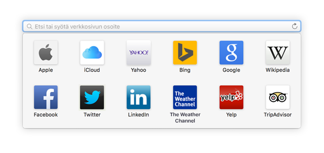
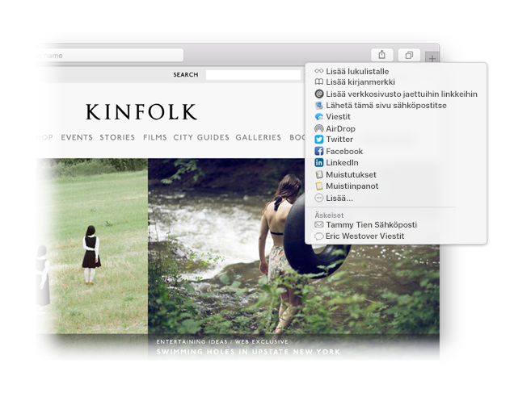

Etsi suosikki.
Klikkaa älykästä hakukenttää, jotta pääset suosikkisivuillesi. Klikkaa sivustoa siirtyäksesi sinne.

Nastoita sivusto.
Nastoita välilehti vetämällä sitä vasemmalle ja se pysyy välilehtipalkissa.

Jaa linkki.
Klikkaa  lähettääksesi linkin sähköpostilla tai tekstinä, jakaaksesi sen Facebookissa tai Twitterissä tai lisätäksesi sen Muistiinpanoihin.
lähettääksesi linkin sähköpostilla tai tekstinä, jakaaksesi sen Facebookissa tai Twitterissä tai lisätäksesi sen Muistiinpanoihin.